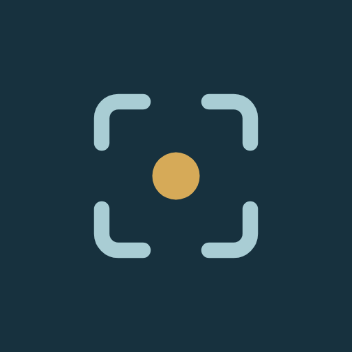

Brand
Find a job. Keep your head.
How hireframe is named, drawn and spoken, with the text and images ready to use on a profile, a site or a post.
The name
Say it "hire-frame". Hire plus wireframe: a job search kit made by a designer, for designers.
Write it like this
hireframe, all lower case, also at the start of a sentence.
Never alone: the first time on a page, in a title or in a post, add what it is: "hireframe, the AI job search kit for designers". Search engines read the name as "wireframe", so the description is what gets you found.
Not like this
Hireframe, HireFrame, Hire Frame, FaiND, JobOps
One word, lower case. FaiND and JobOps are retired names.
One name everywhere
The product, the repository (hireframe, formerly jobops-kit), the website and the skills (hireframe-start and the others) all use the same name.
Wordmark
The Hireframe mark and the name. Four wireframe corners, like the handles of a selection in a design tool, frame one gold core: hire plus wireframe, and choosing what matters. "hire" is set in the accent colour.

Space and size
Keep clear space around the wordmark equal to the width of the mark's gold core, times three. The wordmark is never smaller than 96 px wide. The mark alone is never smaller than 16 px.
Do
Use the supplied files. Use the light version on light, the dark version on dark. Keep the gold for the core and for "hire" on dark. On light, the core always sits inside its deep steel ring.
Do not
Do not retype it in a font. Do not put a gold "hire" or a bare gold core on a light background, it fails contrast. Do not stretch, outline, shadow or recolour it.
Colour
Six colours, taken from a palette of mist, teal, steel and gold. Gold is an accent. It is never used for small text on a light background.
- Mist#E1EBF0
Light surface - Teal#A9CDD4
Soft fills, dark mark - Steel#477A91
Mark, secondary - Deep steel#2E5C72
Buttons, links - Ink#17313E
Text - Gold#D6AA58
The AI, the dot
The product tokens, with live contrast checks, are on the design system page.
Voice
Dry wit and a stoic backbone. Say the number, what it means, and one line worth keeping. Never "don't worry".
Sounds like hireframe
A rejection is mail. Not a verdict.
26 applications is a small sample. Treat every comparison as a hint, not a result.
Does not
Don't worry, the right role is out there!
Supercharge your career with AI.
Plain words
Short sentences. No hype words. Numbers with their label. Write for someone who reads English as a second language.
Words to use
Copy and paste. Each one is true of the product today.
One line
hireframe is the AI job search kit for designers. Open source. It keeps an honest record, shows your real odds, and keeps your files on your computer.
Short description
hireframe, the AI job search kit for designers, helps you run a calm, honest job search with Claude. No code: everything is plain text, the dashboard runs in your browser, and your files stay yours.
Bio for LinkedIn, X and GitHub
hireframe: the AI job search kit for designers. Open source, built on Claude, made by a UX designer during a real search. Honest numbers, your files on your computer.
Repository description
The AI job search kit for designers, built on Claude. No code, honest numbers, a local dashboard, your files stay on your computer.
Tagline
Find a job. Keep your head.
Downloads
The wordmark is drawn as outlines, so it looks the same everywhere without any font. Right click and save, or use the links.
- wordmark-light.svgWordmark with mark, for light backgrounds
- wordmark-dark.svgWordmark with mark, for dark backgrounds
- wordmark-onink.svgWordmark with mark, for deep night blue
- wordmark-text-light.svgWordmark without the mark, light
- wordmark-text-dark.svgWordmark without the mark, dark
- mark.svgThe mark on its own, for light backgrounds

- mark-dark.svgThe mark on its own, for dark backgrounds
- favicon.svgFavicon, follows the system theme

- avatar-512.pngProfile picture, 512 px

- og-card-1200x630.pngShare card for links, 1200 by 630

- linkedin-banner-1584x396.pngLinkedIn banner, 1584 by 396